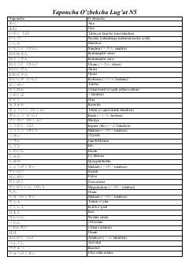

YOYaponcha-o'zbekcha so'zlashuv va lug'at to'plami.
Ushbu qo'llanma yapon tilini o'rganuvchilar uchun mo'ljallangan bo'lib, kundalik hayotda eng ko'p ishlatiladigan so'zlar va ularning o'zbekcha tarjimalarini o'z ichiga oladi. Lug'at boshlang'ich bosqichdagi o'quvchilar uchun qulay so'z boyligini shakllantirishga yordam beradi.